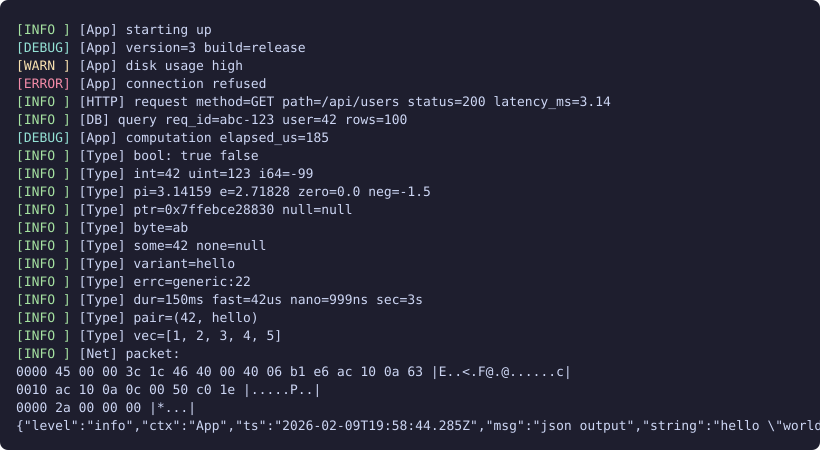

log.h
C++23 / single header / Linux
Single-header C++23 structured logging library. No allocations, ~110ns per log call. Formats integers, floats, containers, optionals, variants, durations, error codes, pointers, hex dumps, etc. Uses SIMD (SSE2 through AVX2) for JSON escaping, hex encoding, and digit formatting when available, scalar fallback otherwise.
#include "log.h"
Log::info("App", "starting");
Log::info("HTTP", "req", Log::kv("status", 200), Log::kv("ms", 3.14));
Needs C++23 (GCC 13+ / Clang 17+) and Linux/POSIX.
